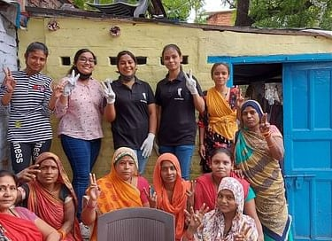

As we all know, 2020 was a year the world was striving to survive the global pandemic of COVID-19. During these dire times we felt an urge to make an impact with whatever we had, and so we tried! We tried to uplift the underprivileged and help the needy with all the resources and materials we could arrange. It was tough, but we did not lose our hope and kept going in order to bring the change everyone was expecting the bigger authorities to bring to society on smaller levels.
We started off as a group of high schoolers but now are a team of numerous passionate individuals from different parts of the city and state! March 28, 2021 was the day we officially landed on the ground to serve our duties as the youth of a rapidly progressing nation. After all, the main hope of a nation lies in the arms of its youth.


NayePankh Foundation was initiated to bring change and help people during the tough times of COVID-19. Later in the year, the NGO started expanding operations to provide help to a wider section of society. With this revamped vision, the NGO acquired the name NayePankh — giving wings to uplift the underprivileged section of our society.
NayePankh is one of the eminent NGOs engaged in providing food, sanitary napkins, and clothes, and educating underprivileged sectors of our society for a better future. We make active efforts to solve the daily challenges faced by people in India. For example, many young women face humiliation in public spaces during their menstrual cycle. To bring change, we create awareness campaigns among women and youth about personal hygiene and distribute sanitary napkins.
In our endeavor to fight hunger, we distribute food not only to underprivileged communities but also to stray animals. We also provide clothes to poor families. Till date, we have helped more than two lakh people. Although this seems like a major milestone, our goal is still not complete, and we continue to push forward with complete dedication.
We are a 12A and 80G certified NGO. This means any donation made to NayePankh qualifies for a 50% tax deduction under the Income Tax Act. We are completely led by the youth of our country, many of whom are still in schools and colleges, working together as 'BADALTE BHARAT KI NAYI TASVEER'!